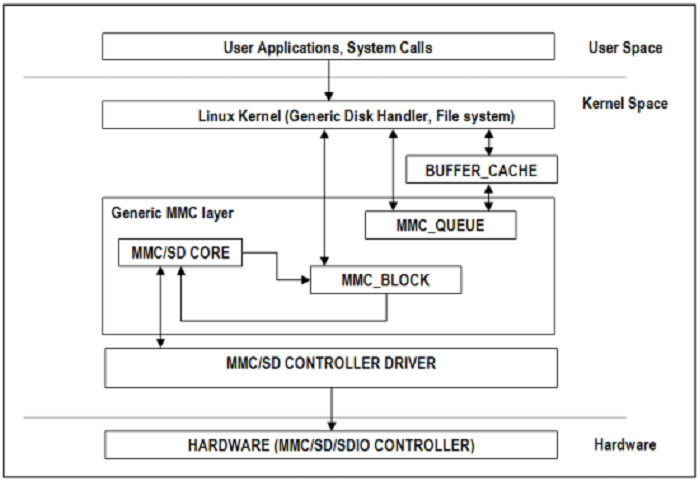

3.2.2.19. MMC/SD¶
3.2.2.19.1. Introduction¶
The multimedia card high-speed/SDIO (MMC/SDIO) host controller provides an interface between a local host (LH) such as a microprocessor unit (MPU) or digital signal processor (DSP) and either MMC, SD® memory cards, or SDIO cards and handles MMC/SDIO transactions with minimal LH intervention.
MMC/SD Driver Architecture
3.2.2.19.2. References¶
- JEDEC eMMC Homepage [http://www.jedec.org/category/technology-focus-area/flash-memory-ssds-ufs-emmc]
- SD ORG Homepage [http://www.sdcard.org]
3.2.2.19.3. Acronyms & Definitions¶
| Acronym | Definition |
|---|---|
| MMC | Multimedia Card |
| HS-MMC | High Speed MMC |
| SD | Secure Digital |
| SDHC | SD High Capacity |
| SDIO | SD Input/Output |
Table: MMC/SD: Acronyms
3.2.2.19.4. Features¶
The SD/MMC driver supports the following features:
- Support ADMA for DMA transfers
- HS400 speed mode
- Support for both built-in and module mode
- ext2/ext3/ext4 file system support
3.2.2.19.5. Supported High Speed Modes¶
- SD
| Platform | SDR104 | DDR50 | SDR50 | SDR25 | SDR12 |
|---|---|---|---|---|---|
| J721e-EVM | Y | Y | Y | Y | Y |
- eMMC
| Platform | DDR52 | HS200 | HS400 |
|---|---|---|---|
| J721e-EVM | Y | Y | Y |
3.2.2.19.6. Driver Configuration¶
The default kernel configuration enables support for MMC/SD driver as built-in to kernel. TI SDHCI driver is used. Following options need to be configured in Linux Kernel for successfully selecting SDHCI driver for J721E.
- Enable SDHCI support (CONFIG_MMC_SDHCI)
Device Drivers -->
MMC/SD/SDIO card support -->
<*> Secure Digital Host Controller Interface support
- Enable SDHCI platform helper (CONFIG_MMC_SDHCI_PLTFM)
Device Drivers -->
MMC/SD/SDIO card support -->
Secure Digital Host Controller Interface support -->
<*> SDHCI platform and OF driver helper
- Enable SDHCI controller for TI device (CONFIG_MMC_SDHCI_AM654)
Device Drivers -->
MMC/SD/SDIO card support -->
<*> Support for the SDHCI Controller in TI's AM654 SOCs